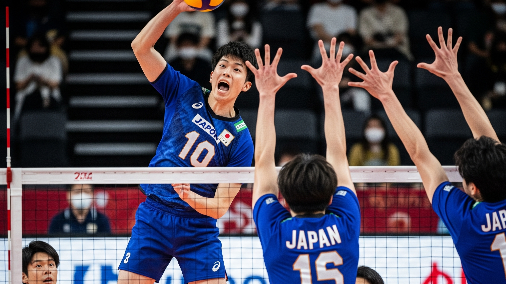
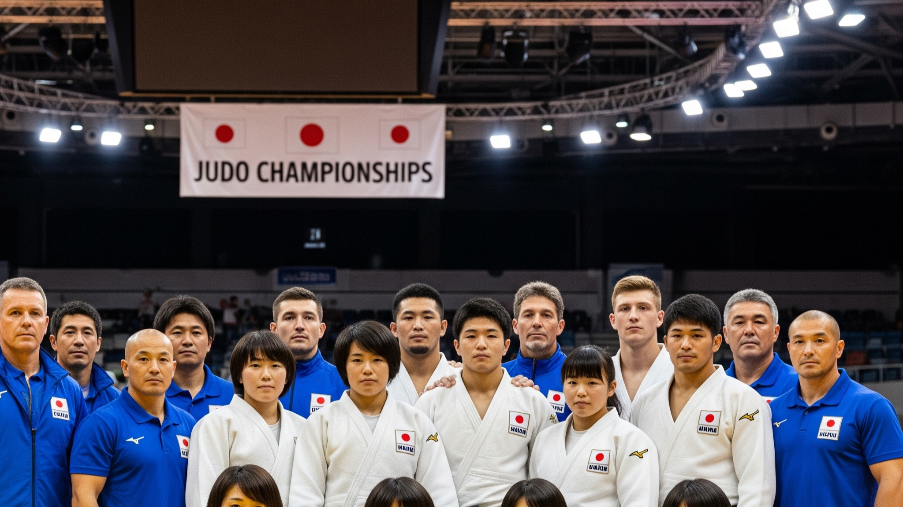
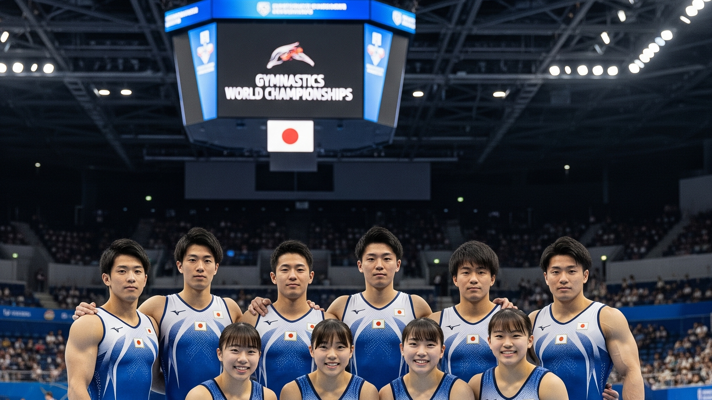
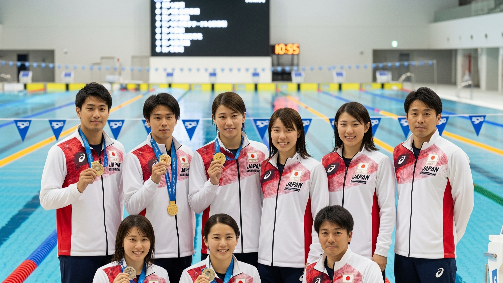
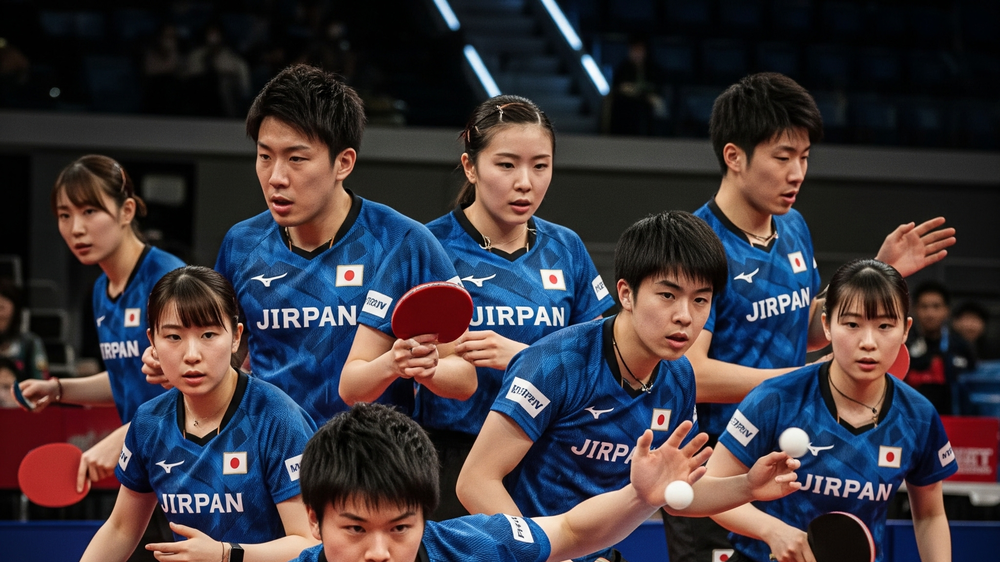

Japanese Key Sports
日本の注目競技
バレーボール
バレーボールは、日本で非常に人気のあるチームスポーツです。svリーグがあり、男女ともに国際大会での活躍が期待されています。特に女子は「火の鳥NIPPON」として知られ、オリンピックでのメダル獲得経験もあります。
柔道
柔道は日本の国技であり、オリンピックでも多くのメダルを獲得している強豪国です。精神と肉体を鍛える武道として世界中で親しまれています。
体操
体操競技は、男子団体を中心に日本が常に世界のトップレベルにいる競技です。美しい演技と高い技術で観客を魅了します。
野球
野球は、日本で最も人気のあるスポーツの一つで、プロ野球リーグは多くの熱狂的なファンを魅了しています。国際大会でも日本代表は常に強豪として知られ、数々のタイトルを獲得しています。

水泳
水泳は、日本がオリンピックで多くのメダルを獲得している競技です。競泳、飛び込み、アーティスティックスイミングなど、幅広い種目で活躍する選手を輩出しています。
卓球
卓球は、近年日本が国際大会で目覚ましい活躍を見せている競技です。特に若手選手の台頭が著しく、オリンピックでのメダル獲得も期待されています。
